Wolfenstein 3D Complete
A conversion of the 1994 Macintosh first-person shooter to a handheld console from 1989 with 64 KB of RAM. Built from the original Mac source code, the whole game fits on a 512 KB cartridge, and has been developed over five years. Every wall is drawn as a single Suzy hardware-scaled sprite, keeping rendering cost on the CPU close to zero. The game is played with the Lynx held in portrait orientation (TATE mode).
| Specification | Macintosh (1994) | Atari Lynx (1989) |
|---|---|---|
| CPU | Motorola 68020 or later | 65C02, 4 MHz |
| RAM | 4 MB | 64 KB |
| Display | 640 × 480 | 160 × 102 |
| Colours on screen | 256 | 16 |
| Storage | Hard disk | 512 KB cartridge |
The full version, shown above, is complete but not publicly released. The shareware release (the first three levels) is available to download.
Download the shareware on AtariAgeScreenshots
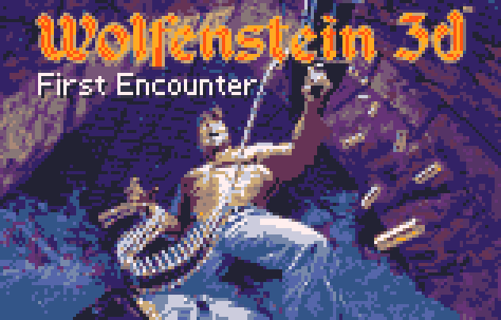
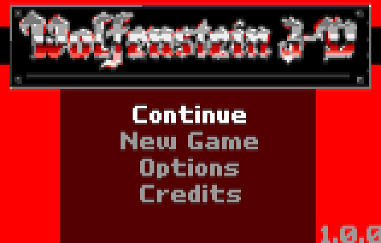
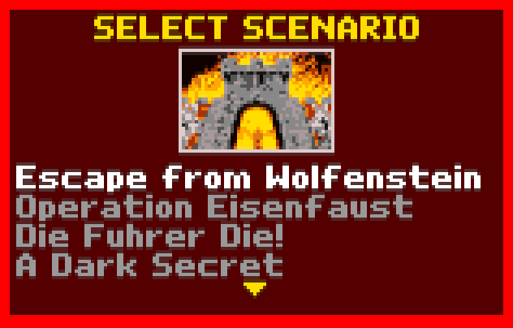
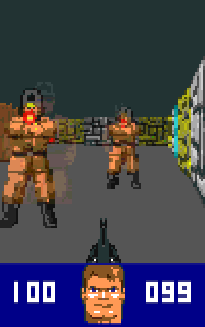
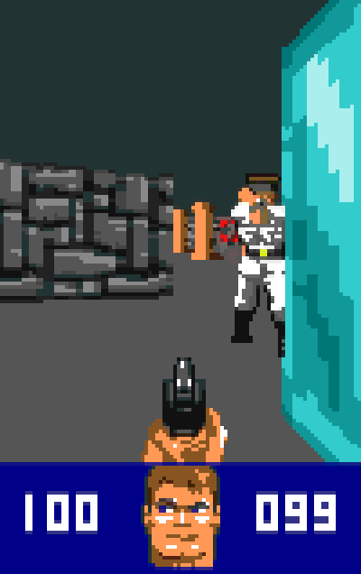
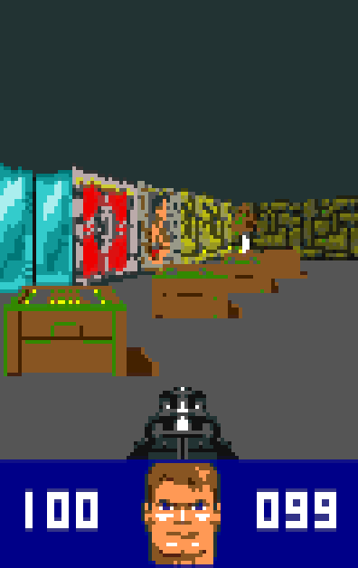
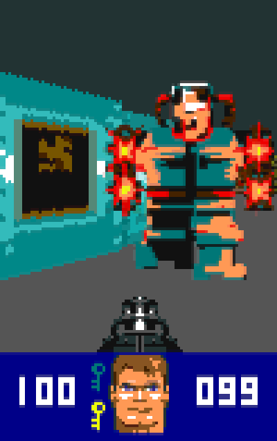
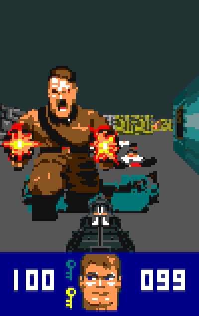
How a frame is drawn
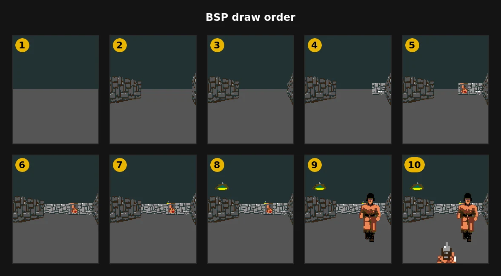
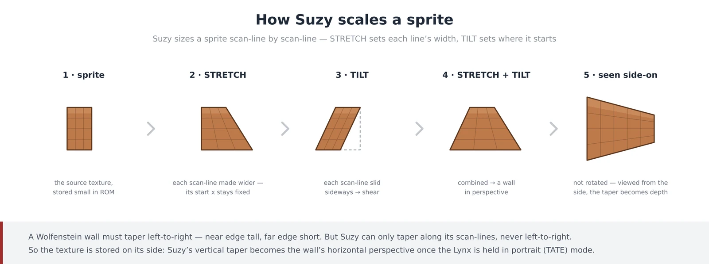
Suzy also multiplies and divides in hardware while the CPU carries on with other work. Scheduling the perspective maths so the CPU and Suzy run in parallel was the most time-consuming optimisation, and the most effective.
Art conversion
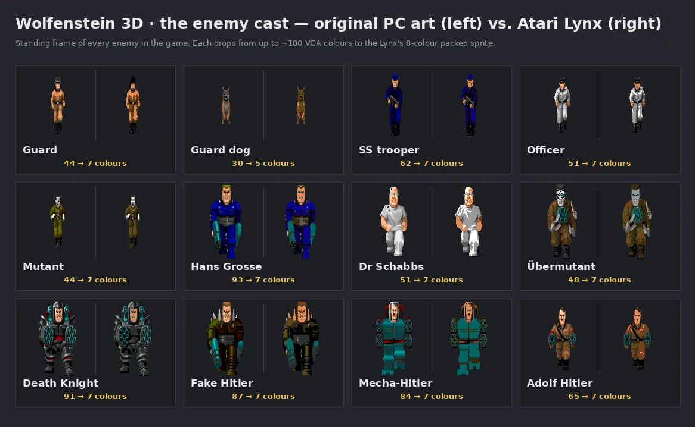
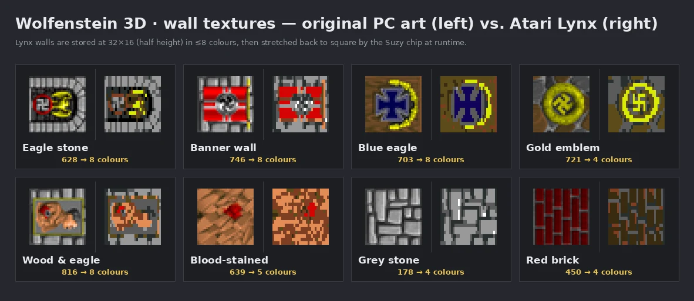
Development tools
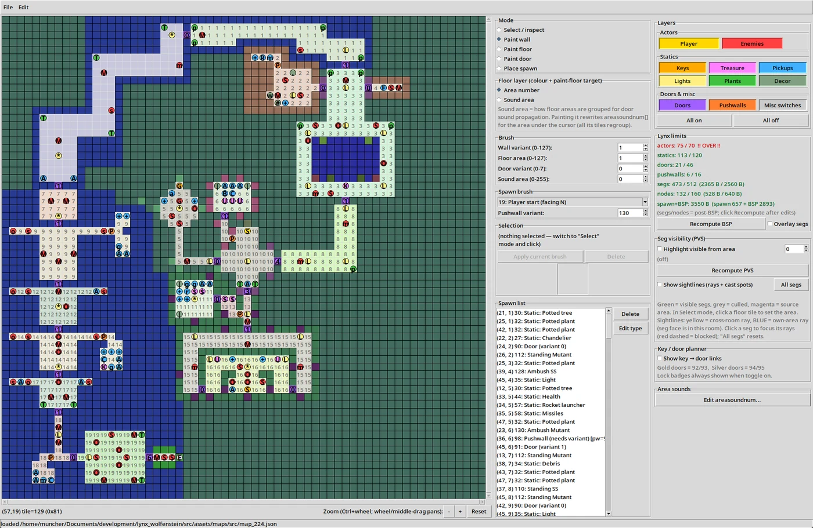
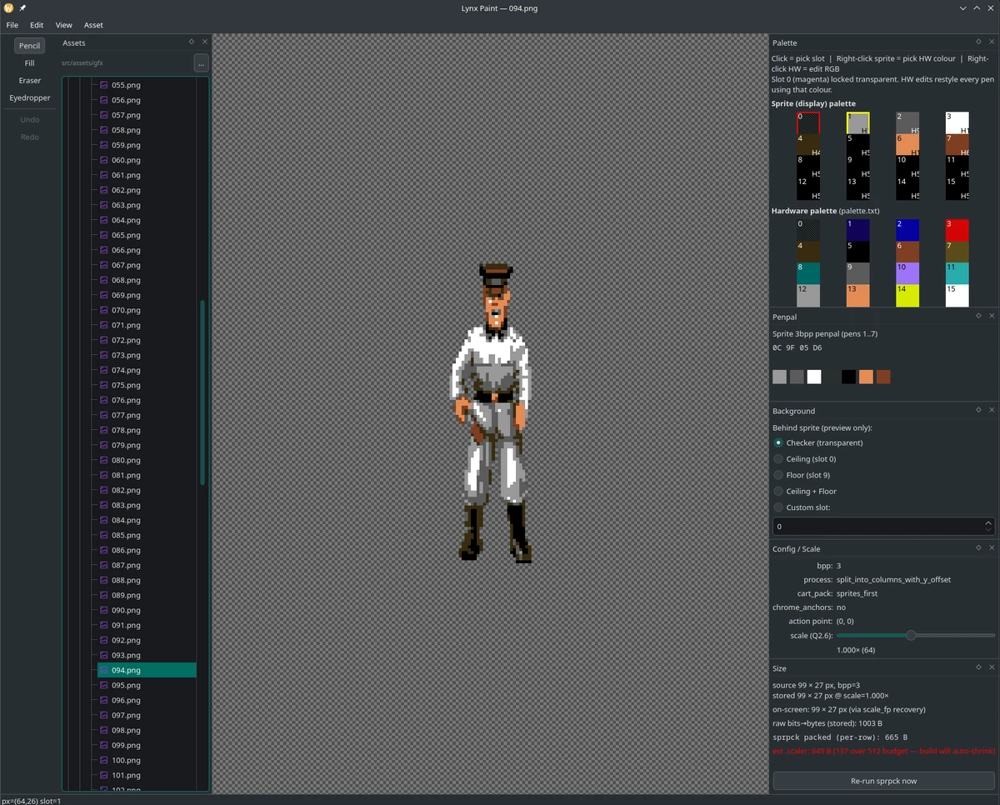
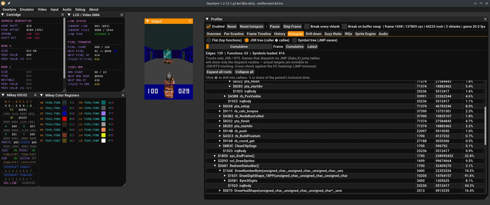